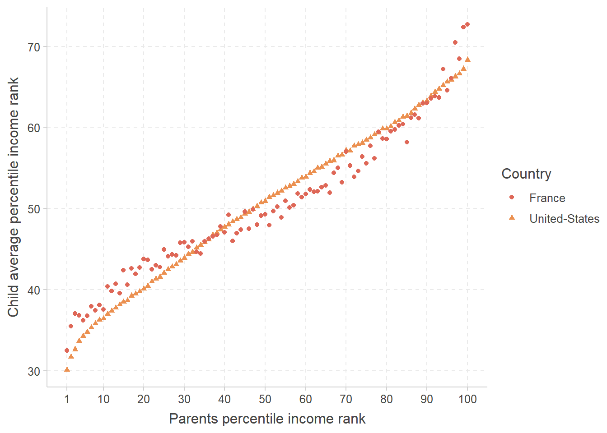
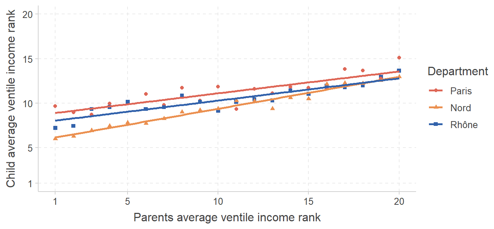

flips <- read.csv("C:/User/data/flips.csv")
str(flips)Introduction to Econometrics & R Programming
Exercise 1: Coin flips (/7,5)
Consider two coins, both with a value on each side. Coin A has the value 0 on one side and the value 100 on the other. Coin B has the value 100 on one side and the value 200 on the other. Denote \(x\) the outcome of flipping the two coins and summing the values of the visible sides. Consider that both coins are balanced, such that each of their side has a 50% chance of being drawn.
On considère deux pièces, chacune ayant une valeur sur chaque face. La pièce A a la valeur 0 sur une face et 100 sur l’autre. La pièce B a la valeur 100 sur une face et 200 sur l’autre. On note \(x\) la somme des faces visibles après le lancer des deux pièces. On considère que les pièces sont équilibrées, telles que chaque face a une probabilité d’être tirée égale à 50 %.
Question 1
Is the distribution of \(x\) left-skewed, right-skewed, or symmetrical? Justify your answer.
La distribution de \(x\) est-elle étalée à gauche, à droite, ou symétrique ? Justifiez.Compute the first and second theoretical moments of the distribution of \(x\).
Calculez le premier et le deuxième moment théorique de la distribution de \(x\).
/1/2
Question 2
You flip both coins 200 times and gather the outcome every time. The resulting distribution has a mean of 185 and a variance of 5,000. This mean seems a bit far from its expected value for the coins to actually be balanced, but can you reject this hypothesis at the 95% confidence level?
Vous lancez les deux pièces 200 fois et documentez le résultat à chaque fois. La distribution qui en résulte a une moyenne de 185 et une variance de 5 000. Cette moyenne semble un peu loin de son espérance pour que les pièces soient effectivement équilibrées, mais pouvez-vous rejeter cette hypothèse au seuil de confiance de 95 % ?
/2
Question 3
You gathered the outcome of each coin flip in a
csvfile that you import in R as follows:
Vous avez documenté le résultat de chaque tirage dans un fichiercsvque vous importez ainsi :
'data.frame': 201 obs. of 1 variable:
$ x: num 300 200 100 100 300 100 100 200 200 100 ...When trying to compute the mean, you obtain the following outcome:
Lorsque vous tentez de calculer la moyenne, vous obtenez le résultat suivant :
mean(flips$x)[1] NAWhat is the problem and where does it seem to come from?
Quel est le problème et d’où semble-t’il venir ?
/1,5
Question 4
You then run the following code to compute descriptive statistics on the variable but you obtain the following error.
Vous exécutez ensuite le code suivant pour calculer des statistiques descriptives mais vous obtenez l’erreur suivante.
flips %>%
summarise(mean = mean(x),
median = median(x),
sd = sd(x))Error in flips %>% summarise(mean = mean(x), median = median(x), sd = sd(x)) : could not find function "%>%"
How would you solve this issue?
Comment régleriez-vous ce problème ?
/1
Exercise 2: Intergenerational income mobility (/12,5)
In Economics, the study of intergenerational income mobility generally consists in characterizing the joint distribution of individuals’ income and the income of their parents. To do so, it is common to rank individuals from those who earn the lowest incomes to those who earn the highest incomes, and to divide this income distribution in 100 groups of 1% of the population. These groups are called percentile income ranks. Denote \(p^p\) the percentile rank of parents in their income distribution, from 1 to 100, and \(p^c\) the percentile rank attained by their children once they are adults, from 1 to 100. One way to measure intergenerational income mobility is to estimate the following regression:
En économie, l’étude de la mobilité intergénérationelle consiste généralement en la caractéristation de la distribution jointe entre le revenu des individus et le revenu de leurs parents. Pour ce faire, il est commun d’ordonner les individus de celui dont les revenus sont les plus faibles à celui dont les revenus sont les plus élevés, et de diviser cette distribution des revenus en 100 groupes de 1 % de la population. Ces groupes peuvent être considérés comme des rangs en centiles de revenus. On note \(p^p\) le rang en centile des parents dans leur distribution des revenus, de 1 à 100, et \(p^c\) le rang en centile atteint par leurs enfants à l’âge adulte, de 1 à 100. Une façon de mesurer la mobilité intergénérationnelle de revenus est d’estimer la régression suivante : \[p^c_i = \alpha + \beta\times p^p_i+\varepsilon_i\]
Question 1
Using the income tax records of more than 40 million individuals in the United States, Chetty et al. (2014) estimated \(\beta\) to be equal to 0.34. Interpret this coefficient.
À partir des données fiscales de plus de 40 millions d’individus aux États-Unis, Chetty et al. (2014) ont estimé la valeur de \(\beta\) à 0,34. Interprétez ce coefficient.Using the same data, it can be shown that \(Cor(p^p, p^c)\) is also equal to 0.34. Why is this not a coincidence?
À partir des mêmes données, on peut montrer que \(Cor(p^p, p^c)\) vaut aussi 0,34. Pourquoi est-ce que cela n’est pas une coïncidence ?
/1/1
Question 2
For each percentile rank \(p^p\) of the parents income distribution, the following graph represents the average percentile income rank \(\bar{p}^c_p\) attained by children, separately for France and the United States.
Pour chaque rang en centile \(p^p\) de la distribution des revenus des parents, le graphique suivant représente le rang moyen en centile \(\bar{p}^c_p\) atteint par les enfants, séparément pour la France et les États-Unis.

Draw on the graph the line that would be obtained if the position of children in the income distribution was completely independent from that of their parents. Label this line “A”.
Tracez sur le graphique la ligne qui serait obtenue si la position des enfants dans la distribution des revenus était complétement indépendante de celle de leurs parents. Notez cette ligne “A”.Draw on the graph the line that would be obtained if every child had the same position as their parents in the income distribution. Label this line “B”.
Tracez sur le graphique la ligne qui serait obtenue si chaque enfant avait la même position que leurs parents dans la distribution des revenus. Notez cette ligne “B”.Do the two lines cross, and if so, at which coordinates?
Les deux lignes se croisent-elles, et si oui, à quelles coordonnées ?
/0,5/0,5/1
Question 3
Which country has the highest intergenerational income mobility in the bottom quartile? Motivate your answer.
Quel pays a la mobilité intergénérationnelle la plus élevée dans le quartile le plus défavorisé ? Justifiez votre réponse.Which country has the highest intergenerational income mobility in the top 5%? Motivate your answer.
Quel pays a la mobilité intergénérationnelle la plus élevée parmi le top 5 % ? Justifiez votre réponse.
/0,5/0,5
Question 4
Would regressing \(\bar{p}^c_p\) on \(p^p\) provide a higher \(R^2\) on the US data or on the French data, and why?
La régression de \(\bar{p}^c_p\) sur \(p^p\) produirait-elle un \(R^2\) plus élevé sur les données françaises ou états-uniennes, et pourquoi ?Would regressing \(\bar{p}^c_p\) on a third-order polynomial of \(p^p\) provide a higher \(R^2\) on the US data or on the French data, and why?
La régression de \(\bar{p}^c_p\) sur un polynome d’ordre 3 de \(p^p\) produirait-elle un \(R^2\) plus élevé sur les données françaises ou états-uniennes, et pourquoi ?
/1/1
Question 5
The following graph shows the relationship between parents ventile income rank and the average ventile income rank of children, separately for those who grew up in Paris, in the Nord department, and in the Rhône department. Ventiles are used instead of centile because of sample size issues. Ventiles are computed based on the national income distribution. Table 2 in Annex provides the underlying values to this graph and additional information on the distribution of the variables \(p^p\) and \(\bar{p}^c_p\) in these three departments. Table 1 reports the regression results corresponding to this graph.
Le graphique suivant représente la relation entre le rang en vingtile de revenus des parents et le rang moyen en vingtile de leurs enfants, séparément pour ceux qui ont grandi à Paris, dans le département du Nord, et dans le Rhône. Les vingtiles sont utilisés au lieu des centiles pour des raisons de taille d’échantillon. Les vingtiles sont calculés à partir de la distribution nationale des revenus. Le tableau 2 en Annexe documente les valeurs sous-jacentes à ce graphique ainsi que des informations supplémentaires sur la distribution des variables \(p^p\) et \(\bar{p}^c_p\) dans ces trois départements. Le tableau 1 reporte les résultats de régression correpondants à ce graphique.

| Child ventile | |
|---|---|
| Parents ventile | 0.245 *** |
| (0.027) | |
| Department: Nord | -2.870 *** |
| (0.457) | |
| Department: Rhône | -0.865 |
| (0.457) | |
| Parents ventile x Department: Nord | 0.113 ** |
| (0.038) | |
| Parents ventile x Department: Rhône | 0.005 |
| (0.038) | |
| Constant | 8.665 *** |
| (0.323) | |
| N | 60 |
| R2 | 0.882 |
| *** p < 0.001; ** p < 0.01; * p < 0.05. | |
- Interpret the results associated with:
Interprétez les résultats associés à :
/3
- Department: Nord
- Parents ventile x Department: Nord
- Parents ventile x Department: Rhône
What is the ventile-ventile correlation in the Rhône department?
Quelle est la corrélation vingtile-vingtile dans le département du Rhône ?Compare the expected ventile rank for children whose parents locate at the 10th ventile in these three departments.
Comparez l’espérance du rang en vingtile pour les enfants dont les parents sont situés au 10ème vingtile dans ces trois départements.
/1/1,5
Annex
| Paris | Rhône | Nord | |
|---|---|---|---|
| Mean child ventile | 12.0 | 10.6 | 9.2 |
| Child ventile standard deviation | 4.8 | 5.0 | 5.3 |
| Mean parents ventile | 13.8 | 11.4 | 8.2 |
| Parents ventile standard deviation | 3.7 | 4.0 | 5.5 |
| Mean ventile for children from v. 1 | 9.7 | 7.2 | 6.0 |
| Mean ventile for children from v. 2 | 9.0 | 7.5 | 6.3 |
| Mean ventile for children from v. 3 | 8.7 | 9.3 | 6.9 |
| Mean ventile for children from v. 4 | 10.0 | 9.6 | 7.4 |
| Mean ventile for children from v. 5 | 10.2 | 10.1 | 7.8 |
| Mean ventile for children from v. 6 | 11.0 | 9.3 | 7.7 |
| Mean ventile for children from v. 7 | 9.8 | 9.5 | 8.3 |
| Mean ventile for children from v. 8 | 11.7 | 10.8 | 9.0 |
| Mean ventile for children from v. 9 | 10.3 | 10.2 | 9.2 |
| Mean ventile for children from v. 10 | 11.9 | 9.1 | 9.4 |
| Mean ventile for children from v. 11 | 9.4 | 10.1 | 10.3 |
| Mean ventile for children from v. 12 | 11.6 | 10.5 | 10.2 |
| Mean ventile for children from v. 13 | 11.1 | 10.3 | 9.4 |
| Mean ventile for children from v. 14 | 11.8 | 11.4 | 10.6 |
| Mean ventile for children from v. 15 | 11.7 | 11.0 | 10.5 |
| Mean ventile for children from v. 16 | 11.6 | 12.0 | 12.2 |
| Mean ventile for children from v. 17 | 13.8 | 11.8 | 12.3 |
| Mean ventile for children from v. 18 | 13.7 | 12.0 | 12.2 |
| Mean ventile for children from v. 19 | 12.8 | 13.0 | 12.6 |
| Mean ventile for children from v. 20 | 15.1 | 13.7 | 13.0 |
NE PAS RETOURNER AVANT D’Y AVOIR ETE INVITE
Déroulé de l’examen
Durée de l’examen :
- ⠀⠀⠀• Sans tiers-temps : 1h15
- ⠀⠀⠀• Avec tiers-temps : 1h40
Matériel autorisé :
- ⠀⠀⠀• Crayon(s)
- ⠀⠀⠀• Feuille de notes A4 recto manuscrite
Copies :
- ⠀⠀⠀• Ecrire son nom sur chaque copie
- ⠀⠀⠀• Lever la main si besoin de copie/brouillon supplémentaire
Langue :
- ⠀⠀⠀• L’énoncé est en anglais et en français
- ⠀⠀⠀• Rédiger les réponses soit en anglais soit en français
Le barème est indicatif et peut être sujet à modifications.